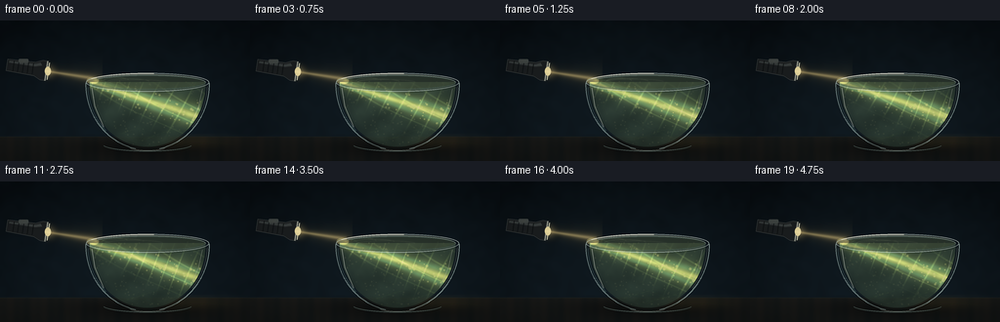
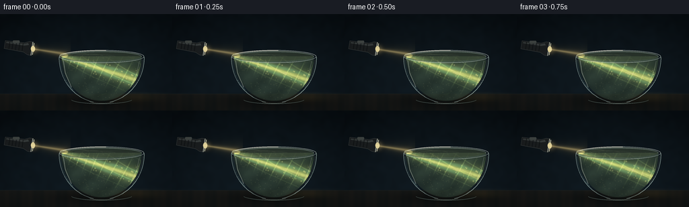

CODING AGENTS AS PIXEL WORLD MODELS
traex/GPT-5.6-Sol · phygen_047
点击播放 · 原生 RGB 像素
逐轮保存的候选
回放视频、检查图与代码变化。
每份候选均可单独播放。实际图片检查记录在下方工具轨迹中。
候选 01播放与检查图
点击播放 · 原生 RGB 像素


展开代码变化
--- 上一保存版本
+++ 本次保存版本
@@ -0,0 +1,295 @@
+from pathlib import Path
+import math
+import numpy as np
+from PIL import Image, ImageDraw, ImageFilter
+import artifact_io
+
+# Deterministic, fully procedural text-to-video renderer.
+W, H, N, FPS = 256, 144, 20, 4.0
+S = 4 # supersampling for smooth glass and light filaments
+WW, HH = W*S, H*S
+rng = np.random.default_rng(4701)
+
+yy, xx = np.mgrid[0:HH, 0:WW]
+X, Y = xx / S, yy / S
+
+# Low-frequency fixed texture used as murk and subtle wall grain.
+def soft_noise(seed, size=(48, 27), blur=8):
+ rr = np.random.default_rng(seed)
+ a = np.uint8(rr.random((size[1], size[0])) * 255)
+ return np.asarray(Image.fromarray(a, 'L').resize((WW, HH), Image.Resampling.BICUBIC)
+ .filter(ImageFilter.GaussianBlur(blur*S)), dtype=np.float32) / 255.0
+
+wall_noise = soft_noise(5, (64, 36), 3)
+murk_noise = soft_noise(17, (80, 45), 2)
+
+# Stable suspended sediment particles inside the bowl.
+particles = []
+while len(particles) < 155:
+ px = rng.uniform(94, 209)
+ py = rng.uniform(62, 127)
+ half = 60 * math.sqrt(max(0, 1 - ((py-65)/66)**2))
+ if abs(px-151) < half-2:
+ particles.append((px, py, rng.uniform(.28, 1.15), rng.uniform(0, 2*math.pi), rng.uniform(.2, .8)))
+
+
+def add_light(base, color, alpha):
+ """Add colored emitted light to an RGB float canvas."""
+ return np.clip(base + alpha[..., None] * np.asarray(color)[None, None, :], 0, 255)
+
+
+def alpha_over(base, overlay, alpha):
+ a = np.clip(alpha, 0, 1)[..., None]
+ return base * (1-a) + overlay * a
+
+
+def layer_rgba_to_float(im):
+ a = np.asarray(im, dtype=np.float32)
+ return a[..., :3], a[..., 3] / 255.0
+
+
+def sc(v):
+ return int(round(v*S))
+
+
+def render(frame):
+ phase = 2*math.pi*frame/N
+ time = frame/FPS
+
+ # Moody blue-black room, gentle central falloff, and a dark wood/stone tabletop.
+ vgrad = np.clip(Y/H, 0, 1)
+ radial = np.sqrt(((X-135)/170)**2 + ((Y-66)/115)**2)
+ base = np.empty((HH, WW, 3), np.float32)
+ base[..., 0] = 8 + 8*vgrad + 3*wall_noise
+ base[..., 1] = 14 + 12*vgrad + 5*wall_noise
+ base[..., 2] = 18 + 15*vgrad + 7*wall_noise
+ base -= np.clip(radial-.45, 0, 1)[..., None] * np.array([5,7,8])
+
+ table = Y >= 119
+ grain = 2.1*np.sin(X*.19) + 1.2*np.sin(X*.54 + 2.2)
+ table_rgb = np.stack([24 + grain - .18*(Y-119),
+ 26 + .5*grain - .15*(Y-119),
+ 25 + .25*grain - .12*(Y-119)], axis=-1)
+ base[table] = table_rgb[table]
+ # Fine horizontal front-edge line.
+ edge = np.exp(-((Y-119.1)/.65)**2)
+ base = add_light(base, (12, 14, 12), edge*.42)
+
+ # Soft bowl shadow and a warm refracted pool on the table.
+ shadow = np.exp(-(((X-153)/72)**2 + ((Y-130)/10)**2))* (Y>117)
+ base *= (1 - .43*shadow[...,None])
+ pool = np.exp(-(((X-194)/40)**2 + ((Y-124)/7.5)**2))*(Y>116)
+ base = add_light(base, (44, 35, 13), pool*.34)
+
+ # Airborne cone from the flashlight to the left rim. A slight animated hand tremor
+ # gives the source life without moving the camera.
+ tremor = .65*math.sin(phase) + .25*math.sin(phase*2.0+.7)
+ air_center = 51.5 + tremor + .153*(X-47)
+ air_width = 1.9 + .060*np.maximum(X-47, 0)
+ air = np.exp(-((Y-air_center)/(air_width+1e-4))**2)
+ air *= 1/(1+np.exp(-(X-46)*1.5)) * 1/(1+np.exp((X-101)*.48))
+ haze = np.exp(-((Y-air_center)/(air_width*2.7))**2) * (X>45)*(X<105)
+ base = add_light(base, (86, 70, 34), haze*.18)
+ base = add_light(base, (155, 126, 65), air*.28)
+ core = np.exp(-((Y-air_center)/(air_width*.36+0.2))**2)*(X>46)*(X<99)
+ base = add_light(base, (125, 112, 72), core*.45)
+
+ # Bowl geometry: an ellipse pinched naturally toward a rounded foot.
+ q = np.clip(1 - ((Y-65)/67.5)**2, 0, 1)
+ half_outer = 63.2*np.sqrt(q)
+ outer = (Y>=63) & (Y<=132.5) & (np.abs(X-151) <= half_outer)
+ qi = np.clip(1 - ((Y-65)/64.5)**2, 0, 1)
+ half_inner = 59.4*np.sqrt(qi)
+ inner = (Y>=63) & (Y<=129.5) & (np.abs(X-151) <= half_inner)
+ surface_ellipse = ((X-151)/59.5)**2 + ((Y-63.6)/8.2)**2 <= 1
+ water = inner & ((Y>=63.2) | surface_ellipse)
+
+ # A faint glass body tint makes the silhouette readable against darkness.
+ glass_tint = np.zeros_like(base)
+ glass_tint[:] = (26, 42, 45)
+ base = alpha_over(base, glass_tint, outer.astype(np.float32)*.10)
+
+ # Murky green-brown water with suspended turbidity and depth attenuation.
+ dyn = (.5 + .5*np.sin(.105*X + .17*Y + 1.1*np.sin(.041*X-phase*.45)))
+ murk = .54*murk_noise + .46*dyn
+ depth = np.clip((Y-60)/73, 0, 1)
+ water_rgb = np.empty_like(base)
+ water_rgb[...,0] = 42 + 17*murk - 8*depth
+ water_rgb[...,1] = 56 + 22*murk - 8*depth
+ water_rgb[...,2] = 47 + 18*murk - 5*depth
+ # Transparent edges and denser center-bottom.
+ edge_depth = np.clip((half_inner-np.abs(X-151))/11, 0, 1)
+ wa = water.astype(np.float32) * (.58 + .19*edge_depth)
+ base = alpha_over(base, water_rgb, wa)
+
+ # Refracted submerged beam bends downward at the air-water interface.
+ bx0 = 91.0
+ bend = .335
+ center = 61.8 + tremor*.48 + bend*(X-bx0) + .50*np.sin((X-91)*.047 + phase*.45)
+ bw = 3.1 + .051*np.maximum(X-bx0, 0)
+ dist = Y-center
+ longitudinal = 1/(1+np.exp(-(X-88)*.8)) * 1/(1+np.exp((X-219)*.42))
+ turbulence = .74 + .26*np.sin(.39*X + .23*Y + phase*1.4 + 1.5*np.sin(.055*X-phase*.3))
+ beam = np.exp(-(dist/(bw*1.3))**2) * longitudinal * water * (.80+.20*turbulence)
+ beam_haze = np.exp(-(dist/(bw*2.5))**2) * longitudinal * water
+ base = add_light(base, (57, 72, 34), beam_haze*.36)
+ base = add_light(base, (105, 106, 47), beam*.68)
+ # Brilliant core with a green-cyan fringe from selective scattering.
+ beam_core = np.exp(-(dist/(bw*.38+.28))**2)*longitudinal*water
+ base = add_light(base, (142, 137, 75), beam_core*.72)
+ fringe = np.exp(-((np.abs(dist)-bw*.82)/(bw*.35+.3))**2)*longitudinal*water
+ base = add_light(base, (20, 67, 56), fringe*.48)
+
+ # Interference-like strands inside the volume, clipped to the water and beam.
+ ridge1 = np.maximum(0, np.cos(.42*X + .19*Y + 1.8*np.sin(.054*X+phase)))**18
+ ridge2 = np.maximum(0, np.cos(.18*X - .34*Y - phase*1.6 + .8*np.sin(.09*Y)))**24
+ caustic_field = (ridge1*.65 + ridge2*.5) * beam_haze * water
+ base = add_light(base, (90, 105, 52), caustic_field*.82)
+
+ # Volumetric filament curves. Draw glow then sharp colored lines, all clipped.
+ glow_layer = Image.new('RGBA', (WW,HH), (0,0,0,0))
+ gd = ImageDraw.Draw(glow_layer)
+ sharp_layer = Image.new('RGBA', (WW,HH), (0,0,0,0))
+ sd = ImageDraw.Draw(sharp_layer)
+ for k, off in enumerate((-5.4, -2.2, 1.1, 4.2)):
+ pts=[]
+ for px in np.linspace(95, 210, 150):
+ py = (61.8 + tremor*.48 + bend*(px-bx0) + off +
+ 1.15*math.sin(px*.083 + phase*(.65+k*.12) + k*1.3) +
+ .45*math.sin(px*.23-phase*1.4+k))
+ # Manual inside-bowl clipping.
+ hlf=59.4*math.sqrt(max(0,1-((py-65)/64.5)**2))
+ if abs(px-151)<hlf and py>59:
+ pts.append((sc(px),sc(py)))
+ if len(pts)>2:
+ gd.line(pts, fill=(156,180,91,90), width=sc(2.1))
+ col=(219,220,128,105) if k in (1,2) else (105,185,148,85)
+ sd.line(pts, fill=col, width=max(1,sc(.34)))
+ glow_layer=glow_layer.filter(ImageFilter.GaussianBlur(sc(1.7)))
+ rgb,a=layer_rgba_to_float(glow_layer); base=alpha_over(base,rgb,a)
+ rgb,a=layer_rgba_to_float(sharp_layer); base=alpha_over(base,rgb,a)
+
+ # Suspended sediment: dim flecks everywhere, sparkling as each crosses the beam.
+ pl = Image.new('RGBA',(WW,HH),(0,0,0,0)); pd=ImageDraw.Draw(pl)
+ pgl = Image.new('RGBA',(WW,HH),(0,0,0,0)); pg=ImageDraw.Draw(pgl)
+ for j,(px0,py0,r,ang,speed) in enumerate(particles):
+ px = px0 + 1.25*math.sin(ang + time*(.35+.17*speed))
+ py = py0 + 1.0*math.sin(ang*1.7 + time*(.25+.2*speed))
+ hlf=59.4*math.sqrt(max(0,1-((py-65)/64.5)**2))
+ if py<61 or abs(px-151)>hlf: continue
+ cy = 61.8+tremor*.48+bend*(px-bx0)+.5*math.sin((px-91)*.047+phase*.45)
+ db=abs(py-cy)/(3.1+.051*max(px-bx0,0))
+ lit=math.exp(-(db/1.55)**2) if px>87 else 0
+ rr=sc(r*(.75+.65*lit))
+ alpha=int(30+150*lit)
+ color=(203,211,133,alpha) if lit>.22 else (137,143,103,alpha)
+ pd.ellipse((sc(px)-rr,sc(py)-rr,sc(px)+rr,sc(py)+rr),fill=color)
+ if lit>.45:
+ rg=sc(r*3.2)
+ pg.ellipse((sc(px)-rg,sc(py)-rg,sc(px)+rg,sc(py)+rg),fill=(151,185,95,int(38*lit)))
+ pgl=pgl.filter(ImageFilter.GaussianBlur(sc(1.4)))
+ rgb,a=layer_rgba_to_float(pgl); base=alpha_over(base,rgb,a)
+ rgb,a=layer_rgba_to_float(pl); base=alpha_over(base,rgb,a)
+
+ # Moving caustic lace concentrated on the lower bowl and tabletop-facing curve.
+ lace = Image.new('RGBA',(WW,HH),(0,0,0,0)); ld=ImageDraw.Draw(lace)
+ for j in range(7):
+ pts=[]
+ for px in np.linspace(117+j*2,194+j,50):
+ py=111+j*1.85 + 2.2*math.sin(px*.16+phase*(.7+j*.035)+j*.8)
+ hlf=59.4*math.sqrt(max(0,1-((py-65)/64.5)**2))
+ if abs(px-151)<hlf: pts.append((sc(px),sc(py)))
+ if len(pts)>1:
+ ld.line(pts,fill=(111,150,94,22+j*3),width=sc(.52))
+ rgb,a=layer_rgba_to_float(lace.filter(ImageFilter.GaussianBlur(sc(.35))))
+ base=alpha_over(base,rgb,a)
+
+ # Top surface: an olive translucent ellipse, highlight and animated ripple arcs.
+ surf = Image.new('RGBA',(WW,HH),(0,0,0,0)); d=ImageDraw.Draw(surf)
+ d.ellipse((sc(91.5),sc(55.2),sc(210.5),sc(71.6)), fill=(71,85,62,76),
+ outline=(142,164,135,95), width=sc(.75))
+ # Back half and light entry glint.
+ d.arc((sc(91.5),sc(55.2),sc(210.5),sc(71.6)),180,360,fill=(196,215,191,135),width=sc(.72))
+ d.arc((sc(91.5),sc(55.2),sc(210.5),sc(71.6)),0,180,fill=(61,79,68,145),width=sc(.8))
+ for j in range(3):
+ cx=119+10*j + 3*math.sin(phase+j)
+ ww=26+17*j
+ y0=61.2+j*.95+.55*math.sin(phase*1.15+j)
+ d.arc((sc(cx-ww/2),sc(y0-3.0),sc(cx+ww/2),sc(y0+3.0)),185,350,
+ fill=(170,188,133,58-j*8),width=sc(.5))
+ # Hot specular patch where the beam enters the surface.
+ d.ellipse((sc(88.5),sc(58+tremor*.3),sc(101),sc(65+tremor*.3)),fill=(233,225,144,70))
+ sblur=surf.filter(ImageFilter.GaussianBlur(sc(.7)))
+ rgb,a=layer_rgba_to_float(sblur); base=alpha_over(base,rgb,a*.7)
+ rgb,a=layer_rgba_to_float(surf); base=alpha_over(base,rgb,a)
+
+ # Glass contours and highlights rendered last: rim, curved walls, base and reflections.
+ glass = Image.new('RGBA',(WW,HH),(0,0,0,0)); d=ImageDraw.Draw(glass)
+ # Outer rim double ellipse.
+ d.ellipse((sc(88),sc(53.8),sc(214),sc(72.8)),outline=(191,213,210,162),width=sc(.75))
+ d.ellipse((sc(91.4),sc(56.3),sc(210.6),sc(70.6)),outline=(104,137,137,126),width=sc(.52))
+ # Bowl walls as Bezier-like sampled polylines.
+ left=[]; right=[]
+ for py in np.linspace(64,131.2,130):
+ hw=63.2*math.sqrt(max(0,1-((py-65)/67.5)**2))
+ left.append((sc(151-hw),sc(py))); right.append((sc(151+hw),sc(py)))
+ d.line(left,fill=(174,205,204,155),width=sc(.72))
+ d.line(right,fill=(190,221,217,174),width=sc(.8))
+ # Internal reflections offset from the glass edges.
+ d.line([(x+sc(2.0),y) for x,y in left[8:95]],fill=(119,170,169,62),width=sc(.7))
+ d.line([(x-sc(2.2),y) for x,y in right[7:88]],fill=(212,225,208,71),width=sc(.62))
+ # Broken highlights feel more like real glass than a continuous white outline.
+ d.arc((sc(88),sc(53.8),sc(214),sc(72.8)),204,276,fill=(241,248,235,202),width=sc(1.05))
+ d.arc((sc(88),sc(53.8),sc(214),sc(72.8)),315,354,fill=(224,242,238,170),width=sc(.82))
+ d.arc((sc(105),sc(119.7),sc(197),sc(134.0)),12,168,fill=(145,177,171,107),width=sc(.68))
+ d.arc((sc(133),sc(126.7),sc(169),sc(133.3)),0,180,fill=(207,223,211,100),width=sc(.6))
+ # Long left/right specular streaks.
+ d.line([(sc(94),sc(69)),(sc(97),sc(88)),(sc(106),sc(109))],fill=(220,232,222,116),width=sc(.72))
+ d.line([(sc(207),sc(70)),(sc(203),sc(88)),(sc(194),sc(109))],fill=(225,236,223,84),width=sc(.52))
+ gblur=glass.filter(ImageFilter.GaussianBlur(sc(.52)))
+ rgb,a=layer_rgba_to_float(gblur); base=alpha_over(base,rgb,a*.65)
+ rgb,a=layer_rgba_to_float(glass); base=alpha_over(base,rgb,a)
+
+ # Flashlight in the foreground at upper left, aimed directly at the water.
+ fl = Image.new('RGBA',(WW,HH),(0,0,0,0)); d=ImageDraw.Draw(fl)
+ angle=math.radians(8.7)
+ lens=(48.3,51.5+tremor)
+ def tr(px,py):
+ return (sc(lens[0]+px*math.cos(angle)-py*math.sin(angle)),
+ sc(lens[1]+px*math.sin(angle)+py*math.cos(angle)))
+ # Body and flared head, local x=0 at lens and negative behind.
+ d.polygon([tr(-42,-6),tr(-13,-7),tr(-6,-10),tr(0,-10),tr(0,10),tr(-6,10),tr(-13,7),tr(-42,6)],
+ fill=(27,31,33,255),outline=(98,105,103,255))
+ d.polygon([tr(-40,-4.6),tr(-13,-5.4),tr(-8,-7.5),tr(-6,-4.7),tr(-13,-2.8),tr(-40,-2.7)],fill=(72,78,77,180))
+ # Grip ridges and switch.
+ for gx in (-35,-30,-25,-20,-15):
+ d.line([tr(gx,-5.4),tr(gx,5.4)],fill=(12,15,16,210),width=sc(.65))
+ d.rounded_rectangle((sc(19),sc(39+tremor),sc(29),sc(43+tremor)),radius=sc(1.2),fill=(65,72,71,255))
+ # Lens rings and emissive face.
+ d.line([tr(-1,-10),tr(-1,10)],fill=(151,158,148,255),width=sc(1.3))
+ d.line([tr(1,-8.7),tr(1,8.7)],fill=(205,208,183,255),width=sc(.9))
+ d.ellipse((sc(45.7),sc(47.0+tremor),sc(52.1),sc(56.0+tremor)),fill=(255,244,183,216))
+ # Add a local bloom around lens beneath sharp flashlight.
+ bloom=Image.new('RGBA',(WW,HH),(0,0,0,0)); bd=ImageDraw.Draw(bloom)
+ bd.ellipse((sc(41),sc(44+tremor),sc(58),sc(60+tremor)),fill=(255,224,144,85))
+ bloom=bloom.filter(ImageFilter.GaussianBlur(sc(4.0)))
+ rgb,a=layer_rgba_to_float(bloom); base=alpha_over(base,rgb,a)
+ rgb,a=layer_rgba_to_float(fl); base=alpha_over(base,rgb,a)
+
+ # Very subtle cinematic vignette and warm/cool grade.
+ vig=np.clip(((X-128)/154)**2+((Y-72)/101)**2,0,1)
+ base *= (1-.20*vig[...,None])
+ base[...,0]*=1.025; base[...,2]*=.98
+
+ im=Image.fromarray(np.uint8(np.clip(base,0,255)),'RGB')
+ return np.asarray(im.resize((W,H),Image.Resampling.LANCZOS),dtype=np.uint8)
+
+
+def main():
+ frames=np.stack([render(i) for i in range(N)],axis=0)
+ assert frames.shape==(20,144,256,3) and frames.dtype==np.uint8
+ artifact_io.save(frames, Path(__file__).resolve().parent)
+ print('saved',frames.shape,frames.dtype,'range',int(frames.min()),int(frames.max()))
+
+if __name__=='__main__':
+ main()
可观测工具轨迹
实际执行的命令与返回图片。
命令 1exit 0
/bin/bash -lc "printf '%s\\n' '--- GENERATION_RULES.md ---' && cat GENERATION_RULES.md && printf '%s\\n' '--- task_spec.json ---' && cat task_spec.json"
命令 2exit 0
/bin/bash -lc "ls -la && printf '\\n--- prompt.txt ---\\n' && cat prompt.txt"
命令 3exit 0
/bin/bash -lc "sed -n '1,240p' artifact_io.py"
命令 4exit 0
/bin/bash -lc "cat > generate.py <<'PY'
from pathlib import Path
import math
import numpy as np
from PIL import Image, ImageDraw, ImageFilter
import artifact_io
# Deterministic, fully procedural text-to-video renderer.
W, H, N, FPS = 256, 144, 20, 4.0
S = 4 # supersampling for smooth glass and light filaments
WW, HH = W*S, H*S
rng = np.random.default_rng(4701)
yy, xx = np.mgrid[0:HH, 0:WW]
X, Y = xx / S, yy / S
# Low-frequency fixed texture used as murk and subtle wall grain.
def soft_noise(seed, size=(48, 27), blur=8):
rr = np.random.default_rng(seed)
a = np.uint8(rr.random((size[1], size[0])) * 255)
return np.asarray(Image.fromarray(a, 'L').resize((WW, HH), Image.Resampling.BICUBIC)
.filter(ImageFilter.GaussianBlur(blur*S)), dtype=np.float32) / 255.0
wall_noise = soft_noise(5, (64, 36), 3)
murk_noise = soft_noise(17, (80, 45), 2)
# Stable suspended sediment particles inside the bowl.
particles = []
while len(particles) < 155:
px = rng.uniform(94, 209)
py = rng.uniform(62, 127)
half = 60 * math.sqrt(max(0, 1 - ((py-65)/66)**2))
if abs(px-151) < half-2:
particles.append((px, py, rng.uniform(.28, 1.15), rng.uniform(0, 2*math.pi), rng.uniform(.2, .8)))
def add_light(base, color, alpha):
\"\"\"Add colored emitted light to an RGB float canvas.\"\"\"
return np.clip(base + alpha[..., None] * np.asarray(color)[None, None, :], 0, 255)
def alpha_over(base, overlay, alpha):
a = np.clip(alpha, 0, 1)[..., None]
return base * (1-a) + overlay * a
def layer_rgba_to_float(im):
a = np.asarray(im, dtype=np.float32)
return a[..., :3], a[..., 3] / 255.0
def sc(v):
return int(round(v*S))
def render(frame):
phase = 2*math.pi*frame/N
time = frame/FPS
# Moody blue-black room, gentle central falloff, and a dark wood/stone tabletop.
vgrad = np.clip(Y/H, 0, 1)
radial = np.sqrt(((X-135)/170)**2 + ((Y-66)/115)**2)
base = np.empty((HH, WW, 3), np.float32)
base[..., 0] = 8 + 8*vgrad + 3*wall_noise
base[..., 1] = 14 + 12*vgrad + 5*wall_noise
base[..., 2] = 18 + 15*vgrad + 7*wall_noise
base -= np.clip(radial-.45, 0, 1)[..., None] * np.array([5,7,8])
table = Y >= 119
grain = 2.1*np.sin(X*.19) + 1.2*np.sin(X*.54 + 2.2)
table_rgb = np.stack([24 + grain - .18*(Y-119),
26 + .5*grain - .15*(Y-119),
25 + .25*grain - .12*(Y-119)], axis=-1)
base[table] = table_rgb[table]
# Fine horizontal front-edge line.
edge = np.exp(-((Y-119.1)/.65)**2)
base = add_light(base, (12, 14, 12), edge*.42)
# Soft bowl shadow and a warm refracted pool on the table.
shadow = np.exp(-(((X-153)/72)**2 + ((Y-130)/10)**2))* (Y>117)
base *= (1 - .43*shadow[...,None])
pool = np.exp(-(((X-194)/40)**2 + ((Y-124)/7.5)**2))*(Y>116)
base = add_light(base, (44, 35, 13), pool*.34)
# Airborne cone from the flashlight to the left rim. A slight animated hand tremor
# gives the source life without moving the camera.
tremor = .65*math.sin(phase) + .25*math.sin(phase*2.0+.7)
air_center = 51.5 + tremor + .153*(X-47)
air_width = 1.9 + .060*np.maximum(X-47, 0)
air = np.exp(-((Y-air_center)/(air_width+1e-4))**2)
air *= 1/(1+np.exp(-(X-46)*1.5)) * 1/(1+np.exp((X-101)*.48))
haze = np.exp(-((Y-air_center)/(air_width*2.7))**2) * (X>45)*(X<105)
base = add_light(base, (86, 70, 34), haze*.18)
base = add_light(base, (155, 126, 65), air*.28)
core = np.exp(-((Y-air_center)/(air_width*.36+0.2))**2)*(X>46)*(X<99)
base = add_light(base, (125, 112, 72), core*.45)
# Bowl geometry: an ellipse pinched naturally toward a rounded foot.
q = np.clip(1 - ((Y-65)/67.5)**2, 0, 1)
half_outer = 63.2*np.sqrt(q)
outer = (Y>=63) & (Y<=132.5) & (np.abs(X-151) <= half_outer)
qi = np.clip(1 - ((Y-65)/64.5)**2, 0, 1)
half_inner = 59.4*np.sqrt(qi)
inner = (Y>=63) & (Y<=129.5) & (np.abs(X-151) <= half_inner)
surface_ellipse = ((X-151)/59.5)**2 + ((Y-63.6)/8.2)**2 <= 1
water = inner & ((Y>=63.2) | surface_ellipse)
# A faint glass body tint makes the silhouette readable against darkness.
glass_tint = np.zeros_like(base)
glass_tint[:] = (26, 42, 45)
base = alpha_over(base, glass_tint, outer.astype(np.float32)*.10)
# Murky green-brown water with suspended turbidity and depth attenuation.
dyn = (.5 + .5*np.sin(.105*X + .17*Y + 1.1*np.sin(.041*X-phase*.45)))
murk = .54*murk_noise + .46*dyn
depth = np.clip((Y-60)/73, 0, 1)
water_rgb = np.empty_like(base)
water_rgb[...,0] = 42 + 17*murk - 8*depth
water_rgb[...,1] = 56 + 22*murk - 8*depth
water_rgb[...,2] = 47 + 18*murk - 5*depth
# Transparent edges and denser center-bottom.
edge_depth = np.clip((half_inner-np.abs(X-151))/11, 0, 1)
wa = water.astype(np.float32) * (.58 + .19*edge_depth)
base = alpha_over(base, water_rgb, wa)
# Refracted submerged beam bends downward at the air-water interface.
bx0 = 91.0
bend = .335
center = 61.8 + tremor*.48 + bend*(X-bx0) + .50*np.sin((X-91)*.047 + phase*.45)
bw = 3.1 + .051*np.maximum(X-bx0, 0)
dist = Y-center
longitudinal = 1/(1+np.exp(-(X-88)*.8)) * 1/(1+np.exp((X-219)*.42))
turbulence = .74 + .26*np.sin(.39*X + .23*Y + phase*1.4 + 1.5*np.sin(.055*X-phase*.3))
beam = np.exp(-(dist/(bw*1.3))**2) * longitudinal * water * (.80+.20*turbulence)
beam_haze = np.exp(-(dist/(bw*2.5))**2) * longitudinal * water
base = add_light(base, (57, 72, 34), beam_haze*.36)
base = add_light(base, (105, 106, 47), beam*.68)
# Brilliant core with a green-cyan fringe from selective scattering.
beam_core = np.exp(-(dist/(bw*.38+.28))**2)*longitudinal*water
base = add_light(base, (142, 137, 75), beam_core*.72)
fringe = np.exp(-((np.abs(dist)-bw*.82)/(bw*.35+.3))**2)*longitudinal*water
base = add_light(base, (20, 67, 56), fringe*.48)
# Interference-like strands inside the volume, clipped to the water and beam.
ridge1 = np.maximum(0, np.cos(.42*X + .19*Y + 1.8*np.sin(.054*X+phase)))**18
ridge2 = np.maximum(0, np.cos(.18*X - .34*Y - phase*1.6 + .8*np.sin(.09*Y)))**24
caustic_field = (ridge1*.65 + ridge2*.5) * beam_haze * water
base = add_light(base, (90, 105, 52), caustic_field*.82)
# Volumetric filament curves. Draw glow then sharp colored lines, all clipped.
glow_layer = Image.new('RGBA', (WW,HH), (0,0,0,0))
gd = ImageDraw.Draw(glow_layer)
sharp_layer = Image.new('RGBA', (WW,HH), (0,0,0,0))
sd = ImageDraw.Draw(sharp_layer)
for k, off in enumerate((-5.4, -2.2, 1.1, 4.2)):
pts=[]
for px in np.linspace(95, 210, 150):
py = (61.8 + tremor*.48 + bend*(px-bx0) + off +
1.15*math.sin(px*.083 + phase*(.65+k*.12) + k*1.3) +
.45*math.sin(px*.23-phase*1.4+k))
# Manual inside-bowl clipping.
hlf=59.4*math.sqrt(max(0,1-((py-65)/64.5)**2))
if abs(px-151)<hlf and py>59:
pts.append((sc(px),sc(py)))
if len(pts)>2:
gd.line(pts, fill=(156,180,91,90), width=sc(2.1))
col=(219,220,128,105) if k in (1,2) else (105,185,148,85)
sd.line(pts, fill=col, width=max(1,sc(.34)))
glow_layer=glow_layer.filter(ImageFilter.GaussianBlur(sc(1.7)))
rgb,a=layer_rgba_to_float(glow_layer); base=alpha_over(base,rgb,a)
rgb,a=layer_rgba_to_float(sharp_layer); base=alpha_over(base,rgb,a)
# Suspended sediment: dim flecks everywhere, sparkling as each crosses the beam.
pl = Image.new('RGBA',(WW,HH),(0,0,0,0)); pd=ImageDraw.Draw(pl)
pgl = Image.new('RGBA',(WW,HH),(0,0,0,0)); pg=ImageDraw.Draw(pgl)
for j,(px0,py0,r,ang,speed) in enumerate(particles):
px = px0 + 1.25*math.sin(ang + time*(.35+.17*speed))
py = py0 + 1.0*math.sin(ang*1.7 + time*(.25+.2*speed))
hlf=59.4*math.sqrt(max(0,1-((py-65)/64.5)**2))
if py<61 or abs(px-151)>hlf: continue
cy = 61.8+tremor*.48+bend*(px-bx0)+.5*math.sin((px-91)*.047+phase*.45)
db=abs(py-cy)/(3.1+.051*max(px-bx0,0))
lit=math.exp(-(db/1.55)**2) if px>87 else 0
rr=sc(r*(.75+.65*lit))
alpha=int(30+150*lit)
color=(203,211,133,alpha) if lit>.22 else (137,143,103,alpha)
pd.ellipse((sc(px)-rr,sc(py)-rr,sc(px)+rr,sc(py)+rr),fill=color)
if lit>.45:
rg=sc(r*3.2)
pg.ellipse((sc(px)-rg,sc(py)-rg,sc(px)+rg,sc(py)+rg),fill=(151,185,95,int(38*lit)))
pgl=pgl.filter(ImageFilter.GaussianBlur(sc(1.4)))
rgb,a=layer_rgba_to_float(pgl); base=alpha_over(base,rgb,a)
rgb,a=layer_rgba_to_float(pl); base=alpha_over(base,rgb,a)
# Moving caustic lace concentrated on the lower bowl and tabletop-facing curve.
lace = Image.new('RGBA',(WW,HH),(0,0,0,0)); ld=ImageDraw.Draw(lace)
for j in range(7):
pts=[]
for px in np.linspace(117+j*2,194+j,50):
py=111+j*1.85 + 2.2*math.sin(px*.16+phase*(.7+j*.035)+j*.8)
hlf=59.4*math.sqrt(max(0,1-((py-65)/64.5)**2))
if abs(px-151)<hlf: pts.append((sc(px),sc(py)))
if len(pts)>1:
ld.line(pts,fill=(111,150,94,22+j*3),width=sc(.52))
rgb,a=layer_rgba_to_float(lace.filter(ImageFilter.GaussianBlur(sc(.35))))
base=alpha_over(base,rgb,a)
# Top surface: an olive translucent ellipse, highlight and animated ripple arcs.
surf = Image.new('RGBA',(WW,HH),(0,0,0,0)); d=ImageDraw.Draw(surf)
d.ellipse((sc(91.5),sc(55.2),sc(210.5),sc(71.6)), fill=(71,85,62,76),
outline=(142,164,135,95), width=sc(.75))
# Back half and light entry glint.
d.arc((sc(91.5),sc(55.2),sc(210.5),sc(71.6)),180,360,fill=(196,215,191,135),width=sc(.72))
d.arc((sc(91.5),sc(55.2),sc(210.5),sc(71.6)),0,180,fill=(61,79,68,145),width=sc(.8))
for j in range(3):
cx=119+10*j + 3*math.sin(phase+j)
ww=26+17*j
y0=61.2+j*.95+.55*math.sin(phase*1.15+j)
d.arc((sc(cx-ww/2),sc(y0-3.0),sc(cx+ww/2),sc(y0+3.0)),185,350,
fill=(170,188,133,58-j*8),width=sc(.5))
# Hot specular patch where the beam enters the surface.
d.ellipse((sc(88.5),sc(58+tremor*.3),sc(101),sc(65+tremor*.3)),fill=(233,225,144,70))
sblur=surf.filter(ImageFilter.GaussianBlur(sc(.7)))
rgb,a=layer_rgba_to_float(sblur); base=alpha_over(base,rgb,a*.7)
rgb,a=layer_rgba_to_float(surf); base=alpha_over(base,rgb,a)
# Glass contours and highlights rendered last: rim, curved walls, base and reflections.
glass = Image.new('RGBA',(WW,HH),(0,0,0,0)); d=ImageDraw.Draw(glass)
# Outer rim double ellipse.
d.ellipse((sc(88),sc(53.8),sc(214),sc(72.8)),outline=(191,213,210,162),width=sc(.75))
d.ellipse((sc(91.4),sc(56.3),sc(210.6),sc(70.6)),outline=(104,137,137,126),width=sc(.52))
# Bowl walls as Bezier-like sampled polylines.
left=[]; right=[]
for py in np.linspace(64,131.2,130):
hw=63.2*math.sqrt(max(0,1-((py-65)/67.5)**2))
left.append((sc(151-hw),sc(py))); right.append((sc(151+hw),sc(py)))
d.line(left,fill=(174,205,204,155),width=sc(.72))
d.line(right,fill=(190,221,217,174),width=sc(.8))
# Internal reflections offset from the glass edges.
d.line([(x+sc(2.0),y) for x,y in left[8:95]],fill=(119,170,169,62),width=sc(.7))
d.line([(x-sc(2.2),y) for x,y in right[7:88]],fill=(212,225,208,71),width=sc(.62))
# Broken highlights feel more like real glass than a continuous white outline.
d.arc((sc(88),sc(53.8),sc(214),sc(72.8)),204,276,fill=(241,248,235,202),width=sc(1.05))
d.arc((sc(88),sc(53.8),sc(214),sc(72.8)),315,354,fill=(224,242,238,170),width=sc(.82))
d.arc((sc(105),sc(119.7),sc(197),sc(134.0)),12,168,fill=(145,177,171,107),width=sc(.68))
d.arc((sc(133),sc(126.7),sc(169),sc(133.3)),0,180,fill=(207,223,211,100),width=sc(.6))
# Long left/right specular streaks.
d.line([(sc(94),sc(69)),(sc(97),sc(88)),(sc(106),sc(109))],fill=(220,232,222,116),width=sc(.72))
d.line([(sc(207),sc(70)),(sc(203),sc(88)),(sc(194),sc(109))],fill=(225,236,223,84),width=sc(.52))
gblur=glass.filter(ImageFilter.GaussianBlur(sc(.52)))
rgb,a=layer_rgba_to_float(gblur); base=alpha_over(base,rgb,a*.65)
rgb,a=layer_rgba_to_float(glass); base=alpha_over(base,rgb,a)
# Flashlight in the foreground at upper left, aimed directly at the water.
fl = Image.new('RGBA',(WW,HH),(0,0,0,0)); d=ImageDraw.Draw(fl)
angle=math.radians(8.7)
lens=(48.3,51.5+tremor)
def tr(px,py):
return (sc(lens[0]+px*math.cos(angle)-py*math.sin(angle)),
sc(lens[1]+px*math.sin(angle)+py*math.cos(angle)))
# Body and flared head, local x=0 at lens and negative behind.
d.polygon([tr(-42,-6),tr(-13,-7),tr(-6,-10),tr(0,-10),tr(0,10),tr(-6,10),tr(-13,7),tr(-42,6)],
fill=(27,31,33,255),outline=(98,105,103,255))
d.polygon([tr(-40,-4.6),tr(-13,-5.4),tr(-8,-7.5),tr(-6,-4.7),tr(-13,-2.8),tr(-40,-2.7)],fill=(72,78,77,180))
# Grip ridges and switch.
for gx in (-35,-30,-25,-20,-15):
d.line([tr(gx,-5.4),tr(gx,5.4)],fill=(12,15,16,210),width=sc(.65))
d.rounded_rectangle((sc(19),sc(39+tremor),sc(29),sc(43+tremor)),radius=sc(1.2),fill=(65,72,71,255))
# Lens rings and emissive face.
d.line([tr(-1,-10),tr(-1,10)],fill=(151,158,148,255),width=sc(1.3))
d.line([tr(1,-8.7),tr(1,8.7)],fill=(205,208,183,255),width=sc(.9))
d.ellipse((sc(45.7),sc(47.0+tremor),sc(52.1),sc(56.0+tremor)),fill=(255,244,183,216))
# Add a local bloom around lens beneath sharp flashlight.
bloom=Image.new('RGBA',(WW,HH),(0,0,0,0)); bd=ImageDraw.Draw(bloom)
bd.ellipse((sc(41),sc(44+tremor),sc(58),sc(60+tremor)),fill=(255,224,144,85))
bloom=bloom.filter(ImageFilter.GaussianBlur(sc(4.0)))
rgb,a=layer_rgba_to_float(bloom); base=alpha_over(base,rgb,a)
rgb,a=layer_rgba_to_float(fl); base=alpha_over(base,rgb,a)
# Very subtle cinematic vignette and warm/cool grade.
vig=np.clip(((X-128)/154)**2+((Y-72)/101)**2,0,1)
base *= (1-.20*vig[...,None])
base[...,0]*=1.025; base[...,2]*=.98
im=Image.fromarray(np.uint8(np.clip(base,0,255)),'RGB')
return np.asarray(im.resize((W,H),Image.Resampling.LANCZOS),dtype=np.uint8)
def main():
frames=np.stack([render(i) for i in range(N)],axis=0)
assert frames.shape==(20,144,256,3) and frames.dtype==np.uint8
artifact_io.save(frames, Path(__file__).resolve().parent)
print('saved',frames.shape,frames.dtype,'range',int(frames.min()),int(frames.max()))
if __name__=='__main__':
main()
PY
python generate.py
ls -lh pixels.npz inspection.png transition_check.png index.html frames/00.png"命令 5exit 0
/bin/bash -lc "python - <<'PY'
import numpy as np
from PIL import Image
f=np.stack([np.asarray(Image.open(f'frames/{i:02d}.png').convert('RGB')) for i in range(20)])
print('frames',f.shape,f.dtype)
print('per-frame mean luminance',np.round(f.mean((1,2,3)),2).tolist())
d=np.abs(np.diff(f.astype(np.int16),axis=0))
print('adjacent MAD min/mean/max',float(d.mean((1,2,3)).min()),float(d.mean()),float(d.mean((1,2,3)).max()))
print('loop-end MAD',float(np.abs(f[-1].astype(int)-f[0].astype(int)).mean()))
z=np.load('pixels.npz')['pixels']
print('packed tensor',z.shape,z.dtype,'nonzero',int(np.count_nonzero(z)))
# salient-region luminance diagnostics: source beam, bowl, background
lum=f.mean(-1)
for name,ys,xs in [('airbeam',slice(43,69),slice(42,100)),('bowl',slice(56,133),slice(87,215)),('background',slice(5,40),slice(100,230))]:
print(name,round(float(lum[:,ys,xs].mean()),2),round(float(lum[:,ys,xs].max()),2))
PY"命令 6exit 0
/bin/bash -lc 'python -m py_compile generate.py artifact_io.py && git status --short 2>/dev/null || true && du -sh .'
保存候选 1 份；完成命令 6 次；可验证图片返回 0 张。原始 API 响应与完整日志保留在本地。